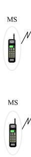
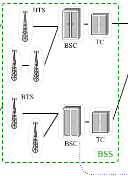
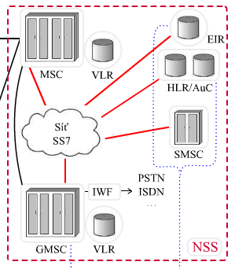
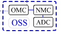

Obsah
Historie
Současnost
Struktura sítě
Přístupové metody
Rádiové rozhraní
Zpracování signálu
GSM - Globální Systém pro Mobilní komunikaci (Groupe Spécial Mobile)
1982 založena skupina GSM
Předpokládalo se, že mobilní telefon bude používat pouze malý zlomek obyvatelstva
Původně velké nepřenosné telefony používané v automobilech
1990 vyšla první specifikace
2G síť - možnost volat posílat SMS, datové přenosy (CSD) a jiné doplňkové služby
1997 GPRS standard pro levnější datové přenosy pomocí datových paketů
1999 vzniká standard UMTS
5 miliar účastníků ve 200 zemích
GSM vyvíjeno organizací 3GPP
Postupně nahrazováno technologiemy 3. a 4. generace
Mobilní uživatelské stanice - MS
(Mobile Station)
- Mobilní telefon je v podstatě transciever (vysílač/přijímač) komunikující se základnovou stanicí BTS.
- Mobilní stanice je jednoznačně identifikována pomocí čísla IMEI (International Mobile Equipment Identity), uloženého v její paměti.
- Sám účastník je identifikován pomocí SIM karty (Subscriber Identification Module).

Subsystém základnových stanic - BSS
(Base Station Subsystem)
- Jedná se o subsystém, se kterým prostřednictvím rádiového rozhraní komunikují jednotlivé mobilní stanice MS.
- Není možná komunikace jednotlivým mobilních stanic přímo mezi sebou.

Síťový spojovací subsystém - NSS
(Network Switching subsystem)
- systém mobilních (radiotelefonních ústředen)
- oproti klasickým ústřednám rozšířeny o další funkce jako: určování polohy, handover, přidělování kanálů apod.

Operační a podpůrný subsystém - OSS
(Operational and Support Subsystem)
- Zajišťuje řádnou činnost a údržbu celé sítě GSM.
- monitoring, diagnostika, opravy poruch systému, administrativní podpora a mnoho dalších úkonů

FDMA
(Frequency Division Multiple Access)
Pásmo rozdělíme na subpásma, kterým jsou dále přiřazeny jednotlivé kanály. Jednotliví účastníci tak komunikují na různých kmitočtech.
Tento princip je využíván například u analogových celulárních systémů pro mobilní komunikaci.
TDMA
(Time Division Multiple Access)
Pouze v digitálních systémech
V daném frekvenčním pásmu jsou vytvořeny časové úseky (intervaly, sloty) a ty jsou poté přidělovány jednotlivým uživatelům.
Skupina takovýchto intervalů příslušejících různým účastníkům se nazývá rámec.
- Dvě rádiová pásma o šířce 2x25 MHz
- Každá dvojice uplink/downlink číslem rádiového frekvenčního kanálu ARFCN (Absolute Radio Frequency Channel Number)
- GSM 900
- uplink: 890-915
- downlink: 935-960 MHz
- Plně duplexní provoz ve formě frekvenčního duplexu FDD s duplexním odstupem 45 MHz
- Nosné vlny mají vzájemný odstup 200 kHz (celkem 125 v pásmu 25MHz)
- GSM 1800
- buňky malých rozměrů
- uplink: 1710-1785 MHz
- downlink: 1805-1880 MHz
- 375 rádiových kanálů
- Šířka pásma 75 MHz
- duplexní odstup 95 MHz
- GSM 1900
- uplink: 1850-1910 MHz
- downlink: 1930-1990 MHz
- Šířka pásma 60 MHz
- duplexní odstup 80 MHz
- 300 rádiových a 2400 uživatelských kanálů
- E-GSM
- rozšírené pásmo
- uplink: 880-915 MHz
- downlink: 925-960 MHz
KONEC
Děkuji za pozornost
By Martin Zajíc / @zajca